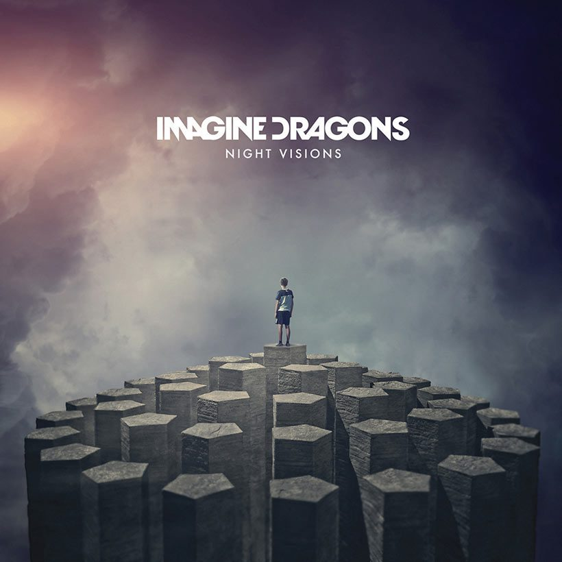
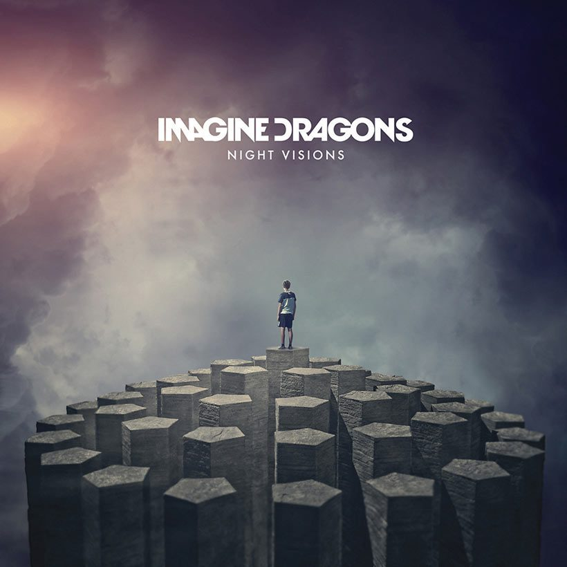

Imagine Dragons is easily the best band of all time for me, and it really comes down to consistency. When I look at my own ratings across every album, they just score higher than anyone else. Almost every track is at least an 8 or 9 for me, and most bands might get a handful of songs at that level, but Imagine Dragons does it album after album. Night Visions, Smoke + Mirrors, Evolve, Origins, Mercury—each one has multiple songs I never skip. When I add up my personal ratings, no other artist even comes close.
But it’s not just the numbers. Their sound hits every mood. They’ve got the emotional stuff, the hype songs, the introspective ones, and somehow it all fits their style. I like that they’re not afraid to mix genres or try something different, and it still ends up sounding like them. It’s the one band I can listen to no matter what I’m doing—driving, studying, working, whatever. So for me, based on both the way I score their music and just how often I actually choose to listen to them, Imagine Dragons is at the top without question.

 

My Ratings
- My Top 3 Imagine Dragons Albums
- Night Visions - Favorite tracks: Radioactive, Demons, On Top of the World
- Evolve - Favorite tracks: Walking the Wire, Next to Me, Whatever It Takes
- Origins - Favorite tracks: Natural, Zero, Bad Liar
- My Top 3 Imagine Dragons Songs Overall
- Demons - Reason: never skip, always hits
- West Coast - Reason: love the vibes
- Bad Liar - Reason: one of their best emotional tracks
Embedded YouTube Video
This is one of my favorites, "Demons".